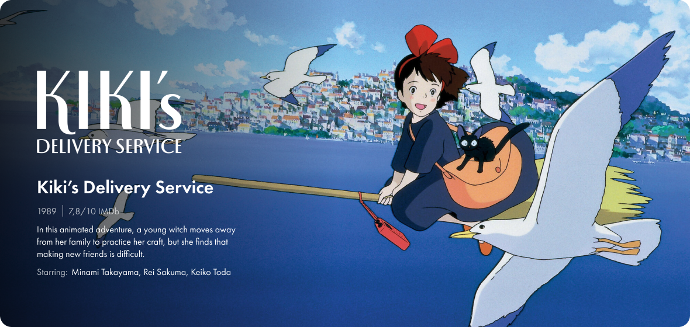
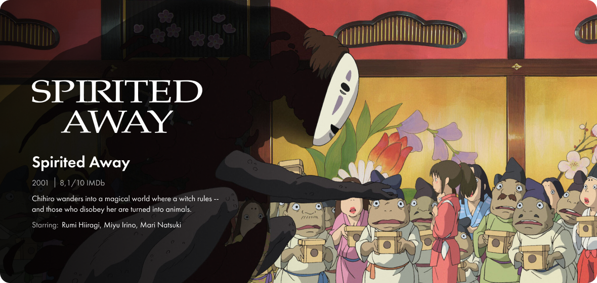

Studio Ghibli, Inc. (Japanese: 株式会社スタジオジブリ, Kabushiki gaisha Sutajio Jiburi) is a Japanese animation studio based in Koganei, Tokyo. It has a strong presence in the animation industry and has expanded its portfolio to include various media formats, such as short subjects, television commercials, and two television films. Their work has been well-received by audiences and recognized with numerous awards...The mascot, and most recognizable symbol, the character Totoro, is a giant spirit inspired by raccoon dogs (tanuki) and cats from the 1988 anime film My Neighbor Totoro. Among the studio's highest-grossing films are Spirited Away (2001), Howl's Moving Castle (2004), and Ponyo (2008). Studio Ghibli was founded on June 15, 1985, by the directors Hayao Miyazaki and Isao Takahata and producer Toshio Suzuki, after acquiring Topcraft's assets. The studio has also collaborated with video game studios on the visual development of several games.